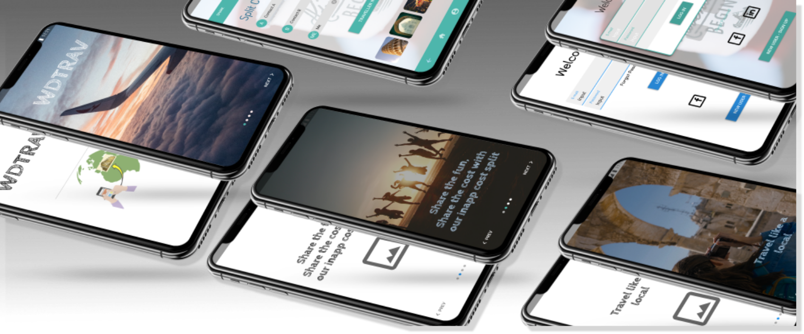
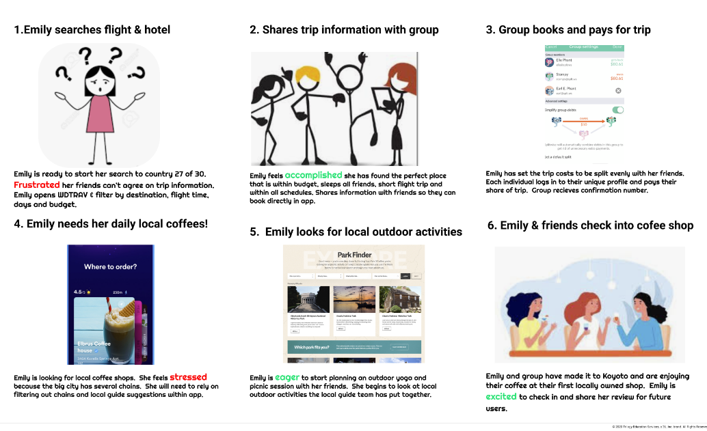

milestones
wdtrav mobile application
executive summary
As a Product Designer, I researched travel applications and created WDTRAV aimed to fill in a market gap. While there are several travel applications currently on the market, WDTRAV allows users to compare, book, research and split costs when traveling in a group all within one application. Research, brainstorming, wireframing, prototyping and testing were conducted to develop a mid fidelity prototype.
- Project Summary
- WDTRAV has combined the planning and experience all into one app from start to finish. The travel application allows the user to search, price compare and book travels with the ability to split the final travel cost with friends directly from the application. The application is geared more towards locally owned hotels and attractions, all reviewed by the local community and previous travelers. The design started by researching the market, interviewing users, developing personas, brainstorming, prioritizing, creating prototypes and testing with several iterations in between.
- roles & responsibilities
- Product & UX Designer
- deliverables
- Personas | Insight Statement | Problem Statement | Prioritization Matrix | User Scenario & User Journey Map | Compeitor Analysis | Tasks & User Flows | MVP | Guerilla Testing | Mid-fidelity Prototype
- time
- 4 Weeks
- tools used
user research
In order to understand my users I developed a research plan along side 2 other UX Designers. The initial piece was to develop three user-centric objectives: Understand how users travelling has been affected by the pandemic, past travel experiences and new travel habits. With my objectives identified I developed quantitative and qualitative questions for a total of 25 questions. I held 4 private virtual interviews and included 3 additional interviews the team interviewed. After interviews were completed all responses were analyzed and simplified in groups with common responses, goals and needs using Miro.

“I like airplanes again because of time and services. It seems more convenient. You pay for the efficiency because it’s a cost with a family of 5 but because of limited vacation time that becomes a higher priority.” - Traveler
user personas
The affinity diagram highlighted key reoccurring responses and feelings which users are needing for future travel. Users are looking for an application that will address safety requirements, reviews from previous users, hotel, flexibility and group friendly. New insights allowed the initial proto-persona to be developed into a User Persona with a more realistic description. Concerns, goals and characteristics that would influence a travel application were included.
insight statement
After iterating and identifying a user insight I was ready to proceed with the second part of design thinking, defining the problem statement. The problem statement needed to be actionable and something I could use later as a metric for success in the design. The problem statement was my guidance when developing the application and identifying the user's pain points.
initial
Emily White a hardworking travel junkie needs assistance in booking her next international girls trip because of a busy work schedule that limits her time to customize her travels and research travel restrictions and local attractions on multiple sites.
The initial statement identified personality, goal and a desire but it needed more detail to clarify parts of her goal and clarify her need. The final statement does that by identifying: limited time in researching, traveling with her friends and submerging herself in 30 countries and cultures by the time she is 30.
final
Emily White a hardworking travel junkie needs assistance due to limited time in researching, customizing, and booking her next international girls trip in order to submerge herself in 30 countries and cultures by 30.
problem statement
After iterating and identifying a user insight I was ready to proceed with the second part of design thinking, defining the problem statement. The problem statement needed to be actionable and something I could use later as a metric for success in the design. The problem statement was my guidance when developing the application and identifying the user's pain points.
initial
Our application, WDTRAV, was designed to allow users to feel connected with other users and customize their travel bookings for all world travelers. We have observed that WDTRAV isn’t giving users reviews in an a format where they are comfortable with their trip. How might we improve WDTRAV so that the users can communicate and understand local experience during travel based on check ins and reviews?
As with the Insight Statement, there were iterations with the problem statement. The initial statement was too broad, language needed to be more specific, the KPI needed to be narrowed down which lead to iterating to the following:
final
Our application, WDTRAV, was designed to allow international users to feel more connected with other users. We have observed that WDTRAV isn’t giving user reviews in an a language they are familiar for their trip. How might we improve WDTRAV so that the users can engage local culture, understand user feedback, and booking based on previous users’ reviews ?
ideation & prioritization
After concluding the design statement I moved on to the ideation phase. I began brainstorming what users like, wish and what if opportunities when traveling, learning new cultures and booking new travels. I highlighted the comments which would be feasible, liable and user-centric to carry over into a prioritization chart. The prioritization chart ranks each comment based on impact and complexity.
Storyboard
With an idea of my user's needs, likes, wants and what ifs completed it was time to move on to a Storyboard. The storyboard is a key element prior to prototyping as it captures process, actions, user emotions from beginning to end. It allowed me to put myself at the beginning of wanting to travel and walks me through the booking process, researching local attractions and concluding with submitting reviews. Each portion of the process is shown with a picture, description and possible emotion the user may feel. Emotions are color coded with green being positive emotion and red being a negative emotion.
user flow
I began the Prototype Phase by creating User Flows
- Sign Up
- Build Profile
- Search & Book Flights & Hotels
- Share & Split Costs
- Find and Review Local Attractions

The second User Flows shows the iteration to upload profile picture, importing contacts, saving reviews and writing review.
prototype wireframes
I spent 2.5 hrs working through the flow and sketching the process into low-fidelity hand sketches. As you can see there are some instances where I inserted certain screens in order to have a smooth transition between tasks. After sketching 34 screens, I used InVision to assist in creating a Low-Fi InVision prototype. I conducted a couple of small interviews which provided me some insights on missing screens. During the next step of digitizing my wireframes I added a few screens to capture comments. I included a screen where the user could select the type of booking, added a calendar screen for departure and return, the number of passengers between adults and kids, and after seat selection I provided the user with more options for their next steps. I digitized my screens using Figma. You may visit my prototypes at:
Sketch Prototype Digitized PrototypeAfter creating an initial digital prototype, I worked on the interface design to create a more bright and user friendly design. The design included creating patterns, rounding button corners and adding shadows to indicate which buttons are to be pushed.
guerilla testing
After cleaning the application I was ready to ask the public to test out the application. I created a few tasks lists with assumptions that would allow me evaluate how effective the interface was. Testing was conducted in 15-30 minute sessions which were recorded via Zoom or Google Hangouts due to COVID-19 precautions. Participants were asked to share their screen. We had an open dialog through through the interview and concluded with participants providing their overall feedback. Participants were asked to do the following five tasks:
- Sign Up
- Book Flight
- Split Cost
- Find Attraction via recommendations
- Write & Upload a Review
results
The Guerrilla User testing provided several insights that are important in the user’s experience.
The After testing I gathered all of my notes and began to group similar responses and ordered them based on frequency
The After testing I gathered all of my notes and began to group similar responses and ordered them based on frequency
design interation
Data from testing indicated I should focus on incorporating the following changes:
- Add Camera Permission
- Use More Pop Up Screens
- Add Back Button
- Rearrange Camera permission
- Rearrange GPS Permission
- Rearrange Contact Permission
- List Who is Traveling in the Group
- Save recommendations based on attractions
The prototype was edited and changed to an Android design and patterns.
@2x.png)
@2x.png)
conclusion
WDTRAV started as an application for solo and group travelers in booking and customizing their trips during their trip and achieved it's goal. We aimed to answer:
How might we improve WDTRAV so that the users can engage local culture, understand user feedback, and booking based on previous users’ reviews ?
The application allows users to research, compare, split and find recommendations on their trips.
The value of guerilla testing on a prototype is priceless because the user has an actual system rather than a theory. After our application I learned users travel with groups often, are budget conscious, want to be involved the new cultures and value recommendations. The application I started provided these features but needed feedback from our users apart from the initial boost of interviews. Users want to be effective in the design and do not want added steps. Users prefer pop features rather than a separate screen.